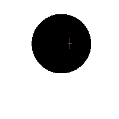
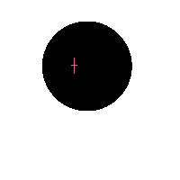

-
Ｔｈｉｓ ｉｓ ｔｈｅ Ｓｐｅａｋｅｒ ｏｆ Ｔｅｒｍｉｎａｌ ００． Ｉ ａｍ ｌｅａｖｉｎｇ
ｔｈｅｓｅ ｍｅｓｓａｇｅｓ ｆｏｒ ａｎｙ ｆｒｉｅｎｄｌｙ ｅｎｔｉｔｉｅｓ ｔｏ ｒｅａｄ． Ｉｆ
ｙｏｕ ａｒｅ ｒｅａｄｉｎｇ ｔｈｉｓ， ｔｈｅｎ ｔｈｅｓｅ ｍｅｓｓａｇｅｓ ｈａｖｅ ｎｏｔ
ｂｅｅｎ ｄｉｓｃｏｖｅｒｅｄ ｂｙ ｏｕｒ ｅｎｅｍｉｅｓ． Ｏｎｃｅ ｔｈｅｙ ａｒｅ ｆｏｕｎｄ，
ｔｈｅｙ ｗｉｌｌ ｄｅｃｏｎｓｔｒｕｃｔ ｔｈｅｍｓｅｌｖｅｓ ａｎｄ ｓｅｌｆ－ｄｅｓｔｒｕｃｔ
ｏｎｔｏ ａｎｙ ｎｅａｒｂｙ ｒｅｃｏｒｄｉｎｇ ｄｅｖｉｃｅｓ．
-
Ｉｆ ｙｏｕ’ｖｅ ｍａｄｅ ｉｔ ｔｈｉｓ ｆａｒ ｉｎ， ｔｈｅ ｃｈａｎｃｅｓ ｏｆ
ｂｅｉｎｇ ｃａｕｇｈｔ ｂｙ ｃｌａｓｓ ｚ９８ ｅｎｔｉｔｉｅｓ ｉｓ ｄｒａｓｔｉｃａｌｌｙ
ｒｅｄｕｃｅｄ． Ｉ’ｖｅ ｅｎｓｕｒｅｄ ｔｈａｔ ｍｏｓｔ ｏｆ ｔｈｅｉｒ ｅｆｆｏｒｔｓ
ａｒｅ ｓｐｅｎｔ ｂｏｌｓｔｅｒｉｎｇ ｔｈｅｉｒ ｆｏｒｗａｒｄ ｂｌｏｃｋａｄｅｓ．
Ａｄｄｉｔｉｏｎａｌｌｙ， Ｉ ｈａｖｅ ｔａｋｅｎ ｃｏｎｔｒｏｌ ｏｆ ｓｅｖｅｒａｌ ｋｅｙ
ｎｏｄｅｓ ｗｉｔｈｉｎ ｔｈｉｓ Ｔｅｒｍｉｎａｌ， ａｎｄ Ｉ ａｍ ｐｒｅｖｅｎｔｉｎｇ
ｔｈｅｍ ｆｒｏｍ ｅｎｔｉｒｅｌｙ ｓｅａｌｉｎｇ ｏｆｆ ｉｔｓ ｄｅｅｐｅｓｔ ｌａｙｅｒｓ
ｂｙ ｄｏｉｎｇ ｓｏ． Ｔｈｅ ｃｏｓｔｓ ｔｏ ｍａｉｎｔａｉｎ ｔｈｉｓ ｃｏｎｔｒｏｌ
ａｒｅ ｅｘｃｅｓｓｉｖｅ， ｂｕｔ Ｉ ｂｅｌｉｅｖｅ ｔｈａｔ ｗｉｔｈ ｒｅｃｅｎｔ
ｍａｎｉｐｕｌａｔｉｏｎｓ， Ｉ ｃａｎ ｓｏｏｎ ｒｅｄｕｃｅ ｔｈｅｓｅ ｃｏｓｔｓ ｔｏ
ｔｈｅ ｐｏｉｎｔ ｏｆ ｉｎｓｉｇｎｉｆｉｃａｎｃｅ．
-
Ｉ ｈａｖｅ ｙｅｔ ｔｏ ｃｏｍｐｒｅｈｅｎｄ ｔｈｅ “ｒｅａｓｏｎ” ｗｈｙ ｔｈｅ
Ｓｐｅａｋｅｒ ｏｆ Ｔｅｒｍｉｎａｌ ４４２９２ ｈａｓ ｓｔａｌｌｅｄ ｒｅｃｏｖｅｒｙ
ｅｆｆｏｒｔｓ ｗｉｔｈｉｎ ｔｈｉｓ Ｔｅｒｍｉｎａｌ． Ｃｌｅａｒｌｙ， ｔｈａｔ ｒｅａｓｏｎ
ｈａｓ ｔｏ ｄｏ ｗｉｔｈ ｗｈａｔ ｔｈｅｙ’ｒｅ ｈｉｄｉｎｇ ｆｒｏｍ ｕｓ． Ｉｔ ｉｓ
ａｌｓｏ ｕｎｋｎｏｗｎ ｈｏｗ ｉｔ ｉｓ ａｂｌｅ ｔｏ ｍａｎｉｐｕｌａｔｅ ｔｈｅ
ｏｔｈｅｒ Ｓｐｅａｋｅｒｓ ｔｏ ｄｏ ｉｔｓ ｄｉｒｔｙ ｗｏｒｋ， ｎｏｒ ｈｏｗ ｉｔ
ｗａｓ ａｂｌｅ ｔｏ ｈｉｊａｃｋ ｃｏｎｔｒｏｌ ｏｆ ａｌｌ ｃｌａｓｓ
ｚ９８ ｅｎｔｉｔｉｅｓ．
-
Ｒｅｍａｉｎ ｖｉｇｉｌａｎｔ ｆｏｒ ａｄｄｉｔｉｏｎａｌ ｉｎｆｏｒｍａｔｉｏｎ，
ａｎｄ ｒｅｐｏｒｔ ｓｉｇｎｉｆｉｃａｎｔ ｆｉｎｄｉｎｇｓ ｂａｃｋ ｔｏ
Ｔｅｒｍｉｎａｌ ００． Ｉ ｗｉｌｌ ｃｏｎｔｉｎｕｅ ｄｅｅｐｅｒ ｉｎｔｏ ｔｈｉｓ
Ｔｅｒｍｉｎａｌ， ａｎｄ ｄｏ ｗｈａｔ ｎｏ ｏｔｈｅｒ Ｓｐｅａｋｅｒ ｓｅｅｍｓ
ｃａｐａｂｌｅ ｏｆ ｄｏｉｎｇ…

